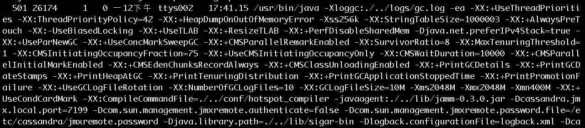
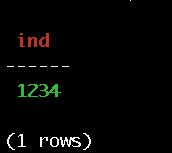
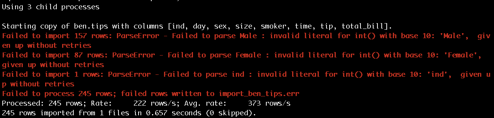
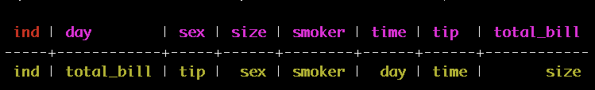

brew install cassandra
pip install cqlsh
cqlsh是為了與cassandra連線互動的terminal，進入cqlsh便可以執行操作cassandra的指令。copy，所以只能殺掉舊版本，安裝新版本，以下介紹怎麼殺掉舊版本。brew uninstall cassandra
ps -ef | grep cassandra

仔細看一下，應該可以看出Cassandra的版本。另外，第二個欄位的數值是PID，砍掉這個process，會需要用到PID。
kill -9 26174
lsof -i |grep :7199
appche-cassandra-3.9/bin/，執行：./cassandra
./cqlsh
CREATE KEYSPACE BEN
WITH REPLICATION = {'class' : 'SimpleStrategy', 'replication_factor': 3};
use BEN;
create table tips(ind int primary key);
insert into tips(ind) values(1234);
select * from tips;

drop table tips;
create table tips(
ind int primary key,
total_bill float,
tip float,
sex text,
smoker text,
day text,
time text,
size int);
desc table tips;
COPY tips FROM 'tip.csv';

file filename可以觀察此兩個檔案的差異。create table tips(
ind text primary key,
total_bill text,
tip text,
sex text,
smoker text,
day text,
time text,
size text);
COPY tips FROM 'tip.csv';
SELECT * FROM tips WHERE ind IN ('ind');

DELETE FROM tips WHERE ind IN ('ind');